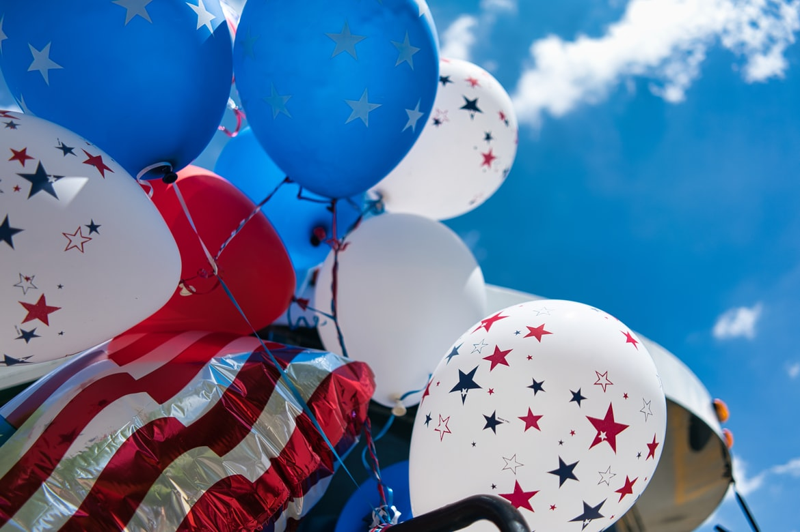

- html
- css
- JavaScript
제목
hello my friend web
독립기념일
미 국은 1776년 7월 4일 영국으로부터의 독립을 선언했다.
이후 미국인들은 7월 4일을 독립 기념일(Independence Day)로
기념해 왔으며
미국의 최대 경축일로 정했다.
이 날에는 처음으로 독립 선언을 알렸던 '필라델피아에 있는 자유의 종'과
전국의 모든 교회 종들을 일제히 쳐서 독립을 기념한다.
그리고 거리는 성조기의 색깔인 빨간 색과 흰 색, 파란 색 리본을 둥글게 묶어서
장식을 하며 갖가지 퍼레이드가 펼쳐지고 TV에서는 독립 기념에 관련된 프로그램을
방영한다. 
상점에서는 퍼레이드에 필요한 장난감,
모자, 지팡이, 장갑, 국기, 풍선,
폭죽 등이 많이 팔린다. 특히 대도시에서는 이날 밤에 밤하늘을 화려하게 수놓는
성대한 불꽃놀이가 벌어진다.